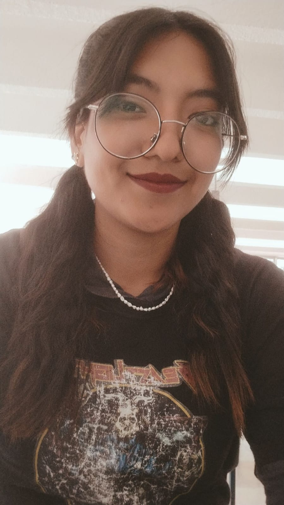

Ariadna Garcia Enriquez
 Tengo 23 años y me escuentro estudiando Diseño Grafico en la Benemerita Universidad Autonoma de Puebla (BUAP).Pertenezco a la cuidad de Puebla,Pue.Me considero una persona dedicada y apasionada con cada trabajo que tengo que realizar pues es la mejor forma de poder demostrar mis habilidades y hasta donde soy capaz de llegar si me esfuerzo lo suficiente, de igual forma me gusta ser colaborativa, brindar apoyo a mis compañeros de trabajo ya sea para alguna tarea o un plan por organizar.
Mi principal motivo por el cual ingrese a la carrera fue por mi gusto a la ilustracion pero mas en lo analogico, pero actualmente que me encuentro en los ultimos semestres de la misma ahora he encontrado nuevas cosas que me apasionan como la fotografia en relacion con el exterior, la naturaleza asi como tambien he experimentado el dirigir un modelo para foto o video, los sistemas de impresion como lo es la Serigrafia, Aerografia, Textil y Grabado han llamado demasiado mi atencion en todo lo que llevo de carrera y por ello decidi sacar la especialidad en "procesos graficos", en la ilustracion aun me sigue gustando pero he aprendido utilizar aplicaciones para hacerlos de manera digital, algo que antes no me hubiera atrevido, por ultimo tengo tambiken un interes en lo que es el desarrollo tipografico.
En estos momentos busco poder desarrollar muchisimo mas mis habilidades que he adquirido en la carrera en un abito laboral para que de esa forma ya no estar tan encerrada en lo que solo "una estudiante" puede hacer si no mas bien lo que "una diseñadora" puede ser capaz de hacer.